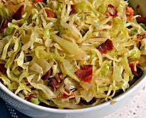

Southern Fried Cabbage

Description
This dish was always a favorite at Mammaw's house. Cabbage is fried with onion and bacon in this simple quick side dish. Terrific with cornbread.
Ingredients
- 3 slices bacon, cut into thirds
- ⅓ cup vegetable oil
- 1 teaspoon salt, or to taste
- 1 teaspoon ground black pepper, or to taste
- 1 head cabbage, cored and sliced
- 1 white onion, chopped
- 1 pinch white sugar
Steps
- Place the bacon and vegetable oil into a large pot over medium heat. Season with salt and pepper. Cook for about 5 minutes, or until bacon is crisp. Add cabbage, onion, and sugar to the pot; cook and stir continuously for 5 minutes, until tender.
Return to main menu